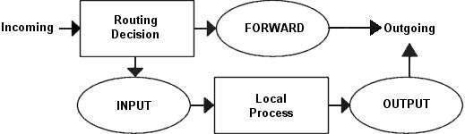
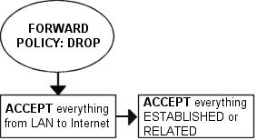
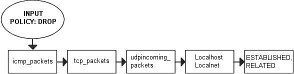
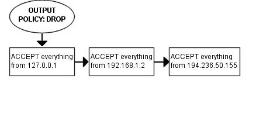

配置
Table of Contents
在本章将要建立一个防火墙，并且详细地说明了如何去阅读、理解它。在这个例子中，使用的是最基本的配置，对其工作方式和在里面做了些什么都有深入的解释。这个例子应该能在某些方面提供基本的思路，比如，如何解决不同的问题（当然是网络方面的），再如，在真正把脚本应用于工作之前应该考虑些什么，等等。对本例中的变量值做些修改就可能在实际的网络中使用，但不建议你这样做， 因为每个人的网络配置和例子中使用的情况可能不一样。但只要你有了这个基本的防火墙规则集，很可能只需要少量的调整就可以把它用于实际了
参数配置
########################################################################### # # 1. Configuration options. # # # 1.1 Internet Configuration. # INET_IP="194.236.50.155" INET_IFACE="eth0" INET_BROADCAST="194.236.50.255" # # 1.1.1 DHCP # # # 1.1.2 PPPoE # # # 1.2 Local Area Network configuration. # # your LAN's IP range and localhost IP. /24 means to only use the first 24 # bits of the 32 bit IP address. the same as netmask 255.255.255.0 # LAN_IP="192.168.0.2" LAN_IP_RANGE="192.168.0.0/16" LAN_IFACE="eth1" # # 1.3 DMZ Configuration. # # # 1.4 Localhost Configuration. # LO_IFACE="lo" LO_IP="127.0.0.1" # # 1.5 IPTables Configuration. # IPTABLES="/usr/sbin/iptables" # # 1.6 Other Configuration. #
第一小节是配置选项，包含的都是一些至关重要的信息，它们是 随着你的网络的不同而改变 的。比如，每个网络的IP地址都不一样，所有要把它放在这 儿:
- $INET _ IP的值应该是在Internet上能使用的才可以，如果你有$INET _ IP的话
- 如果没有，要看看 rc.DHCP.firewall.txt这种配置方法了，里面有很多有趣的东西
- 变量 $INETIFACE应该指向连接Internet的真实设备，比如eth0、eth1、ppp0、tr0
- 这个脚本里没有包含任何 DHCP 或 PPPoE 的选项，所以这两节是空白的。其他空白的部分，也是这样的原 因。之所以保留这些空白，是为了更容易区分这些结构相同而内容不同的脚本。如果你需要这些部分，可以从其他脚本拷贝过来，或者你自己写了:)
- Local Area Network小节包含的是LAN必须的信息
- 连接到LAN的网卡的IP
- LAN所用的地址段。
- Localhost configuration小节里的信息在99%的情况下都不要改变，因为总是使用 127.0.0.1 作为地址，也总是把接口命名为 lo
- IPTables Configuration，里面只有一个变量，即 $IPTABLES 。它指定的是iptables程序的准确位置
- 如果是自己编译安装的话，一般都是 /usr/local/sbin/iptables
- 但更多的发行版都把程序放在另外的地方，如 /usr/sbin/iptables
模块
########################################################################### # # 2. Module loading. # # # Needed to initially load modules # /sbin/depmod -a # # 2.1 Required modules # /sbin/modprobe ip_tables /sbin/modprobe ip_conntrack /sbin/modprobe iptable_filter /sbin/modprobe iptable_mangle /sbin/modprobe iptable_nat /sbin/modprobe ipt_LOG /sbin/modprobe ipt_limit /sbin/modprobe ipt_state # # 2.2 Non-Required modules # #/sbin/modprobe ipt_owner #/sbin/modprobe ipt_REJECT #/sbin/modprobe ipt_MASQUERADE #/sbin/modprobe ip_conntrack_ftp #/sbin/modprobe ip_conntrack_irc #/sbin/modprobe ip_nat_ftp #/sbin/modprobe ip_nat_irc
首先，要使用命令 /sbin/depmod -a 使module dependencies files保持最新，然后，再装载脚本需要的模块。应该始终避免装入不需要的模块，如果可能，还要尽力避免装入无所事事的模块，除非你确实需要它们。这样做主要是为了安全，因为每增加一个模块都要花费额外的努力以增加新的规则（这样就容易出漏洞哦）。比如，如果想支持LOG、REJECT和MASQUERADE target，不要把相应的功能静态地编译进内核，使用以下模块来完成：
$ /sbin/insmod ipt_LOG $ /sbin/insmod ipt_REJECT $ /sbin/insmod ipt_MASQUERADE
内核参数
# # 3. /proc set up. # # # 3.1 Required proc configuration # echo "1" > /proc/sys/net/ipv4/ip_forward # # 3.2 Non-Required proc configuration # #echo "1" > /proc/sys/net/ipv4/conf/all/rp_filter #echo "1" > /proc/sys/net/ipv4/conf/all/proxy_arp #echo "1" > /proc/sys/net/ipv4/ip_dynaddr
使用下面的语句打开IP转发功能：
echo "1" > /proc/sys/net/ipv4/ip_forward
注意，何时何地打开这个功能才算合适是值得好好考虑的一个问题 在本文所用的脚本中，都是在创建IP过滤器（在本文里就是指iptables的过滤规则）之前打开它的 这可能引起这样一种情况，就是在一小段时间内（时间的长短随脚本的复杂程度和机子的性能高低而变化，可能只有一毫秒，也可能会长达 一分钟），防火墙可以转发任何包（因为这时防火墙的过滤规则还没有被装入）。这种情况又会导致安全方面的问题，不怀好意的人可能会趁此通过防火墙破坏网络 也就是说，应该在创建所有防火墙的规则之后再打开IP转发功能，这样做只是为了保正所有脚本的兼容性 在实际应用中一定要注意这一点，尽量不要先开IP转发功能
万一你使用的是SLIP、PPP或DHCP，也就是说你是动态获取IP的，那还要用下面的命令打开 ip _ dynaddr ：
echo "1" > /proc/sys/net/ipv4/ip_dynaddr
设计
为了尽可能地少占用CPU，已经替换了所有不同的自定义链，与此同时，把主要的精力放在了安全性和易读性上。不让TCP包去经历ICMP、UDP和TCP规则的洗礼，而是简单地匹配所有的TCP包，然后让它去一个自定义链中旅行。这种方法并不比让它经历所有的规则开销大。下图可以解释在Netfilter中，外来的包是如何被处理的：

利用这个图形，可以弄清楚脚本的目的。整个脚本基于这样一种假设，我们有一个局域网，一个防火墙及一个Internet连接，且有一个静态IP地址（相对的是动态地址，它们使用的连接是DHCP、PPP、 SLIP，等等），还想把防火墙作为Internet上的一台服务器来运行某些服务。我们完全信任局域网，因此不 能阻塞任何从局域网发出的数据传输。还有一个要优先考虑的事，我们只允许那些被明确说明为可以接受的数据通过。为了做到这一点，就要把缺省策略设为DROP。这样，那些没有被明确标识为允许进入的数据就都被阻塞了
在上面的假设里，想让局域网能够访问Internet。因为局域网是被完全信任的，所以我们应该允许所有来自局域网的数据通过。但Internet是不被信任的，所以想阻塞从Internet向我们的局域网发起的连接。根据上面的所有假设，我们来考虑考虑需要做什么、不需要做什么以及我们想做什么

首先，我们解决的是 局域网要能连接到Internet 的问题。那就要对 所有数据包做NAT 操作，因为局域网内的机子都没有真实的IP地址。NAT是在PREROUTING链中完成的，这也是脚本最后创建的那个规则所在的链。这意味着我们必须要在 FORWARD 链中做过滤工作，否则就是允许所有外部的机子都能完全访问局域网了。因为我们完全信任局域网，所以允许所有由内向外的数据通过。由于我们假设Internet上的机子都不可以访问局域网内的机子，所以要阻塞所有由外向内的连接，但已经建立的或相关的连接除外，因为它们只是用来回应内网对外网的访问，而不是建立对内网的新连接

由于资金有限，我们的防火墙只提供了有限的几个服务： HTTP 、 FTP 、 SSH 和 IDENTD 。因此，我们要 在 INPUT 链里允许这些协议通过 ，还要 在 OUTPUT 链里允许返回的数据通过 。除了完全信任局域网，也信任 loopback 和它的IP地址，因此我们要有相应的规则来 允许所有来自局域网和loopback的数据通过 。但是我们 不会允许一些特殊的包或包头通过，也不会接受Internet上某一段IP的访问 。比如，网段 10.0.0.0/8是为局域网而保留的，一般来说，我们不允许来自它们的包进入，因为这样的包90%都是用来进行欺骗的。不过，在实现这条标准之前，还要注意一个问题，就是有一些ISP在他们的网络里使用的恰恰就是这些地址
因为我们在防火墙上运行FTP服务，而且想让包经历最少的规则，所以要 把处理established和related状态的规则放到INPUT链的顶部 。基于同样的原因，我们把这些规则分到子链中。这样，包就可以尽量少地穿越规则，从而节省时间，也可以降低网络的冗余
在这个脚本里，依据不同的协议把包分到子链中：
- 用来匹配 TCP 包的链叫做 tcp _ packets ，它可以匹配所有我们允许通过的TCP端口和子协 议（如FTP、HTTP等）
- 还要建立一个名为 allowed 的子链，以便在真正接受 那些使用有效端口来访问防火墙的TCP包 之前，对它们进行附加的检查
- 至于 ICMP 包，有称作 icmp _ packets 的链来处理。在决定如何建立这个链时，我考虑到如果我们同意接受ICMP包的类型和代码，就没有必要对它们做附加的检查，所以直接接受它们就行了
- UDP 包当然就是 udp _ packets 了。如果包是那种允许被接收的类型，就直接放行了
因为网络很小，所以防火墙也要作为工作站来用。这就要求要允许一些特殊的协议能和它通 信，比如 speak freely 和 ICQ

现在，来考虑考虑 OUTPUT 链。因为很信任防火墙，所以允许几乎所有离开它的包通过，而没有阻塞任何用户和协议。但我们也不想让人利用这台机子进行IP欺骗，因此我们 只放行那些从防火墙本身的IP发出的包 。为了实现这一点，我们很可能在ACCEPT链中加入这样一条规则： 如果包是由防火墙的IP发出的，就放行，否则，它们就会被OUTPUT链的缺省策略DROP掉
规则
缺省策略
在开始写其他规则之前，先要用下面的语句建立缺省的策略：
iptables [-P {chain} {policy}]
每一条链的策略都是用来 处理那些在相应的链里没被规则匹配的包 。也就是说，如果有一个包没有被规则集中的任何规则匹配，那策略就有用武之地了
# # 4.1.1 Set policies # $IPTABLES -P INPUT DROP $IPTABLES -P OUTPUT DROP $IPTABLES -P FORWARD DROP
要谨慎地设置其他表里的链的策略，因为它们不是用来过滤包的，这就可能引起很怪异的行为发生
自定义链
# # 4.1.2 Create userspecified chains # # # Create chain for bad tcp packets # $IPTABLES -N bad_tcp_packets # # Create separate chains for ICMP, TCP and UDP to traverse # $IPTABLES -N allowed $IPTABLES -N tcp_packets $IPTABLES -N udp_packets $IPTABLES -N icmp_packets
建立这几条自定义链：
- bad _ tcp _ packets
- icmp _ packets
- tcp _ packets
- udp _ packets
- allowed: allowed链是由tcp _ packets链调用的。所有进入$INETIFACE的ICMP包都会被重定向到icmppackets链，TCP包是到 tcppackets链
bad _ tcp _ packets链
# # 4.1.3 Create content in userspecified chains # # # bad_tcp_packets chain # $IPTABLES -A bad_tcp_packets -p tcp --tcp-flags SYN,ACK SYN,ACK \ -m state --state NEW -j REJECT --reject-with tcp-reset $IPTABLES -A bad_tcp_packets -p tcp ! --syn -m state --state NEW -j LOG \ --log-prefix "New not syn:" $IPTABLES -A bad_tcp_packets -p tcp ! --syn -m state --state NEW -j DROP
这条链包含的规则 检查进包的包头是否不正常或有没有其他问题 ，并进行相应地处理。但事实上，我们使用它只是为了过滤掉一些特殊的包：
- 没有设置 SYN 位但又是 NEW 状态的TCP包
- 设置了 SYN/ACK 但也被认为是 NEW 状态的TCP包
可以用来检查所有可能的不一致的东西，比如上面的包或者XMAS port-scans等。还可以为INVALID状态的包增加一条规则的
如果你想完全了解无SYN位的NEW状态，可以看看未设置SYN的NEW状态包，它介绍了未设 置SYN的NEW状态包通过其他规则的情况。在某些情况下可以允许这种包通过，但99%的情况是我们不想让它们通过。因此，我们会先记录这种包，然后再扔掉它们 我们拒绝SYN/ACK包以NEW状态进入的原因也是非常简单的。基本上，我们这样做是出于对其他主机的好意，因为我们为他们预防了序列号预测攻击
allowed链
如果包是从 $INET _ IFACE 进入的，而且是 TCP 包，那它就要经过 tcp _ packets 链的检验。如果这个连接就是冲着被允许通过的端口来的，我们还要对它进行一些检查，以确定是否真的要接受它。这都是在 allowed 链里进行的
# # allowed chain # $IPTABLES -A allowed -p TCP --syn -j ACCEPT $IPTABLES -A allowed -p TCP -m state --state ESTABLISHED,RELATED -j ACCEPT $IPTABLES -A allowed -p TCP -j DROP
- 看看这个包是否是SYN包
- 如果是，它很可能是新连接的第一个包，我们当然接受了
- 如果不是，那就看看包是否来自某个ESTABLISHED或RELATED状态的连接
- 是的话，就接受。ESTABLISHED状态的连接是那种在两个方向上都有流量存在的连接。依据状态机制的观点，这个连接一定处于是ESTABLISHED状态的，因为我们现在能看到这个包，说明以前肯定收到了相应的SYN包
- 最后一条规则将DROP所有其他的包
当包到达最后这条DROP规则，就几乎意味着所有连接都不会有双向的交流，也就是说，我们不会回应SYN包 当试图用非SYN包开始新的连接时，包也会走到这条规则 不用SYN包建立新连接没有什么实际的用处，当然，端口扫描要排除在外 就我知道的而言，现在没有什么有用的TCP/ IP程序会使用SYN包以外的包来打开一个TCP连接 因此，我们要把这样的包DROP掉，有99%的把握说它们是端口扫描用的
处理TCP的链
# # TCP rules # $IPTABLES -A tcp_packets -p TCP -s 0/0 --dport 21 -j allowed $IPTABLES -A tcp_packets -p TCP -s 0/0 --dport 22 -j allowed $IPTABLES -A tcp_packets -p TCP -s 0/0 --dport 80 -j allowed $IPTABLES -A tcp_packets -p TCP -s 0/0 --dport 113 -j allowed
tcp _ packets 链指定了 哪些端口可从Internet访问 。但我们还要对进入的包做更多的检查，因此， 每个包都会被发送到上面提到的 allowed 链
- -A : 告诉iptables要在哪条链里增加规则，规则被放在指定链的末尾
- -p : 指定要匹配的是TCP包
- -s 0/0 : 说明要匹配的源地址是从网络掩码为0.0.0.0的地址0.0.0.0开始的，换句话说，就是所有的地址。这实际上是默认值
- –dport 21 : 目的端口，也就是说如果包是发往端口21的，就会被匹配。如果所有的标准都匹配了，包就要被送往 allowed 链。
TCP的 21 号端口也是允许访问的，也就是 FTP 的控制端口，它可以控制FTP连接
前面提到过，还允许所有RELATED状态的连接通过。这样，也就可以使用PASSIVE和ACTIVE的连接了 当然要事先装载ip_conntrack_ftp模块 如果我们不想再提供FTP服务，就卸载ip_conntrack_ftp模块 并把$IPTABLES -A tcp _ packets -p TCP -s 0/0 --dport 21 -j allowed 这一行从文件 rc.firewall.txt里删掉
22 号端口是 SSH 使用的
注意，你操作的是防火墙，把任何访问权分配给除你自己之外的人都不是什么好主意 防火墙总是应该尽量少地暴露自己
80 是 HTTP 端口，也就是说在防火墙上运行了网页服务
最后还提供了 IDENTD 服务，端口是 113 。这个服务对某些协议是必须的，如 IRC
如果没有匹配上面任何一条规则，包就会被送回 tcp _ packets链的父链 ，也就是把它发到 tcppackets链的那条规则所在的链
处理UDP的链
# # UDP ports # #$IPTABLES -A udp_packets -p UDP -s 0/0 --destination-port 53 -j ACCEPT #$IPTABLES -A udp_packets -p UDP -s 0/0 --destination-port 123 -j ACCEPT $IPTABLES -A udp_packets -p UDP -s 0/0 --destination-port 2074 -j ACCEPT $IPTABLES -A udp_packets -p UDP -s 0/0 --destination-port 4000 -j ACCEPT
如果我们在INPUT链中遇到了UDP包，就把它发送到 udp _ packets 链。此外，我们只接受发往特定端口的包，这些端口是我们想对Internet开放的
我们不需要依据发送端的源端口来决定是否打开某个端口，这个工作是由状态机制完成的
如果我们想运行某个使用UDP端口的服务（如DNS），只要开放相应的端口，其他的端口不需要打开
那些处于 ESTABLISHED状态、正在进入防火墙的包在到达包含--state ESTABLISHED,RELATED的规则（这是 INPUT链里那些“处理来自Internet的包的规则”中的第一条规则）之后就会被接受了
不接受外来的以 53 号端口为目的的 UDP 包，也就是说，不想接受外来的DNS查询
就我个人而言，我会打开 123 号端口，它对应的协议是network time protocol，简称 NTP 。我们可以利用这个协议与某台具有精确时间的时间服务器联系，以设置本机的时间
我打开了 2074 号端口，它是某些实时的多媒体应用程序使用的。比如 speak freely ，可以用这个程序通过音箱、麦克风或耳麦与其他人进行实时交谈
端口 4000 相应的协议是 ICQ 协议，由ICQ使用，世界上使用最广泛的聊天程序之一
如果你正在经历日志满天飞的苦恼，这里有两个额外的规则可以使用，当然，这要看是因为什么引起的 了。我们这里的第一条规则会阻塞目的端口是135到139的广播包。大部分Microsoft使用者会用到NetBIOS 或SMB，而它们就使用这些广播包。这条规则可以阻塞所有位于外网的那些Microsoft Network产 生的广播包，我们的日志也就可以简洁一些了
# # In Microsoft Networks you will be swamped by broadcasts. These lines # will prevent them from showing up in the logs. # #$IPTABLES -A udp_packets -p UDP -i $INET_IFACE -d $INET_BROADCAST \ #--destination-port 135:139 -j DROP
第二条规则也是解决日志问题，不过问题的产生者变了，这 回是外网的DHCP查询。如果你的外网是由非交换的以太网组成的，在那里客户机可以通过DHCP 得到IP地址，也就是说，如果外网里会有很多DHCP查询广播包，那就启用这条规则吧
# If we get DHCP requests from the Outside of our network, our logs will # be swamped as well. This rule will block them from getting logged. # #$IPTABLES -A udp_packets -p UDP -i $INET_IFACE -d 255.255.255.255 \ #--destination-port 67:68 -j DROP
处理ICMP的链
# # ICMP rules # $IPTABLES -A icmp_packets -p ICMP -s 0/0 --icmp-type 8 -j ACCEPT $IPTABLES -A icmp_packets -p ICMP -s 0/0 --icmp-type 11 -j ACCEPT
现在，该决定可以接受哪些ICMP类型了。在INPUT链中，如果ICMP包是从eth0进入的，我们就要把它重定向到 icmp _ packets 链，以检查是否是可以接受的类型。目前，我只接受三种ICMP包：
- ICMP Echo requests : 用来请求echo reply，这个操作主要被用来ping其他的机子，以确定那些机子是否可用
- 如果没有这一条规则，其他机子将不能通过ping来确 定我们是否可用
- 有些人倾向于删掉此规则，只是因为他们不想被Internet看到
- TTL equals 0 during transit/reassembly : 允许数据包 传输 / 组装 期间生存时间为0进入
- 可以追踪从本地到某台主机的路径，或者在包的TTL为0时，能得到回应信息。比如，在追踪到某台主机的路径时，会以 TTL = 1的包开始。当它得到第一个路由时，TTL减为0，我们也会得到第一个路由返回的超时信息。然后 是TTL = 2的包，我们就会得到第二个路由器返回的超时信息。如此，直到得到我们的目的主机返回 的信息。这样，我们就可以从路径上的每一台主机得到一个回应，从而我们可以看到路径上的每一台主机， 也就可以知道路径是断在哪台机子了
默认不接受其他任何ICMP类型的原因是，几乎所有其他类型的ICMP包都是RELATED状态的，也就是说它们都会被处理RELATED状态的规则放行
INPUT链
INPUT链大部分是 使用其他链 来完成这个艰难的工作的。这样做，就不需要从iptables 装载太多的规则，而且它在较慢的机子上也可以工作得很好，但另一方面，这样的机子在高负载时还是会丢弃很多包。之所以能做到这一点，是因为对于大量不同的包，我们通过检查特定的细节来确定它们的类别，再把这些包发送到相应的自定义链去处理。这样，我们可以分割规则集使之包含很少的规则，每个包要经历的规则也就少了。从而，在过滤包时，防火墙的开销也就小多了
首先，我们要检查进入的tcp包的形态是否是不正常的或我们不想要的。这个工作是这样完成的，我们把所有的tcp包送到 bad _ tcp _ packets链，由其中的规则进行检查
# # 4.1.4 INPUT chain # # # Bad TCP packets we don't want. # $IPTABLES -A INPUT -p tcp -j bad_tcp_packets
然后，我们开始处理被信任的网络的数据传输。这包括所有来自 连接内网的网卡 的流量，所有 来自和发往loopback 的流量（和loopback相对应的IP地址包括了所有分配给防火墙的地址，其中也包括连接Internet的地址）。我们把处理LAN的流量的规则放在防火墙的上部，因为我们的局域网产生的流量要远远多于Internet连接。这样，规则会更有效率，防火墙就能以较小的开销去匹配包，从而网络阻塞的可能性也就减小了，而且也便于我们查看经过防火墙的包主要是什么类型
# # Rules for special networks not part of the Internet # $IPTABLES -A INPUT -p ALL -i $LAN_IFACE -s $LAN_IP_RANGE -j ACCEPT $IPTABLES -A INPUT -p ALL -i $LO_IFACE -s $LO_IP -j ACCEPT $IPTABLES -A INPUT -p ALL -i $LO_IFACE -s $LAN_IP -j ACCEPT $IPTABLES -A INPUT -p ALL -i $LO_IFACE -s $INET_IP -j ACCEPT
下面的一些规则会处理来自Internet的信息，在接触这些规则之前，有一个相关的规则，我们可用它来减少一些开销。这是一个处理状态的规则， 它允许所有处于状态ESTABLISHED或RELATED且发往 Internet接口的包进入 。在allowed链中有一个与此类似的规则。顺序上，当然是INPUT链里的规则先处理包了
# # Rules for incoming packets from the internet. # $IPTABLES -A INPUT -p ALL -d $INET_IP -m state --state ESTABLISHED,RELATED \ -j ACCEPT $IPTABLES -A INPUT -p TCP -i $INET_IFACE -j tcp_packets $IPTABLES -A INPUT -p UDP -i $INET_IFACE -j udp_packets $IPTABLES -A INPUT -p ICMP -i $INET_IFACE -j icmp_packets
在INPUT链里，会把从$INET _ IFACE进入的所有TCP包发往tcp _ packets链，类似地，把UDP包发往udp _ packets链，把 ICMP包发往icmp _ packets链。一般说来，防火墙遇到的最多的包是TCP包，其次是UDP包，最后是ICMP包。但要注意，这只是一般情况，可能不适用。一样的规则因为顺序不同，或者说逻辑不同，效率会有很大的差别。如果规则集写得不好，即使只有100条规则，而且有100mbit的 网卡，就算是Pentium III的机子也会吃不消的。所以你自己写规则集时一定要注意这一点
# # If you have a Microsoft Network on the outside of your firewall, you may # also get flooded by Multicasts. We drop them so we do not get flooded by # logs # #$IPTABLES -A INPUT -i $INET_IFACE -d 224.0.0.0/8 -j DROP
这里有一条被注释掉了规则，万一在我们的防火墙外部有一些Microsoft网络，可以启用它来解除日志过多的烦恼。Microsoft的客户机有个坏习惯，就是向地址224.0.0.0/8发送大量的多播包。因此要有这条规则来阻塞那些包，以免我们的日志被它们填满。还记得吗？udp _ packets链里也有两条类似的规则。忘了的话，就到处理UDP的链看看吧
# # Log weird packets that don't match the above. # $IPTABLES -A INPUT -m limit --limit 3/minute --limit-burst 3 -j LOG \ --log-level DEBUG --log-prefix "IPT INPUT packet died: "
在其他的包被INPUT链的策略处理之前，会把它们记录下来，以便查找可能的问题或bug：可能就是我们不想允许它进入的那种包，也可能是对我们做了什么坏事的用户，还可能是防火墙的问题，如我们阻塞了应该被放行的包。我们要了解所有的情况，这样问题才能得以解决。我们每分钟最多记录3个包， 因为我们可不想让日志里记载的都是废话。为了容易辨别包的来源，我们还对所有的记录设置了前缀
FORWARD链
FORWARD链包含的规则很少。首先，会把所有的包发往bad _ tcp _ packets 链。此链我们前面提到过多次，它可以被多条链调用，其实它也就是为这个目的而设计的
# # 4.1.5 FORWARD chain # # # Bad TCP packets we don't want # $IPTABLES -A FORWARD -p tcp -j bad_tcp_packets
之后就是FORWARD链的主要规则了：
- 允许所有来自$LAN _ IFACE的数据通过，没有任何限制，也就是说，LAN可自由地访问Internet
- 允许 ESTABLISHED 和 RELATED 状态的包能通过防火墙。 所有对我们的内网发出的连接的回应都可以返回局域网
- 为了使我们的内网能访问Internet，这些规则是必须的，因为在前面已经把FORWARD链的策略设为DROP了
- 这样设置规则也是很聪明的，因为它在保证局域网可以访问Internet的同时阻止了Internet对局域网的访问
# # Accept the packets we actually want to forward # $IPTABLES -A FORWARD -i $LAN_IFACE -j ACCEPT $IPTABLES -A FORWARD -m state --state ESTABLISHED,RELATED -j ACCEPT
最后也有一个 处理日志 的规则，用来记录没被上面任何规则匹配的包。这样的包很可能是形态不正常的或者是其他问题，比如可能是黑客攻击。这个规则与INPUT链中的那个类似，只是前缀不同，这里用的是："IPT FORWARD packet died: "。前缀主要用来分离日志的记录，便于查找包的来源和包头的一些信息
# # Log weird packets that don't match the above. # $IPTABLES -A FORWARD -m limit --limit 3/minute --limit-burst 3 -j LOG \ --log-level DEBUG --log-prefix "IPT FORWARD packet died: "
OUTPUT链
除了我几乎没有人把防火墙还当作工作站来使用，但正因为这样，我允许几乎所有从防火墙的IP（包括 LOCALHOST _ IP，$LAN _ IP或$STATIC _ IP ）出发的数据，而阻塞其他情况。因为其他任何情况都可能被人以某种方式欺骗
# 4.1.6 OUTPUT chain # # # Bad TCP packets we don't want. # $IPTABLES -A OUTPUT -p tcp -j bad_tcp_packets # # Special OUTPUT rules to decide which IP's to allow. # $IPTABLES -A OUTPUT -p ALL -s $LO_IP -j ACCEPT $IPTABLES -A OUTPUT -p ALL -s $LAN_IP -j ACCEPT $IPTABLES -A OUTPUT -p ALL -s $INET_IP -j ACCEPT
最后的规则还是用来记录那些要被策略 DROP 掉的包。这样，我们就可以了解它们，继而可以对产生的问题采取行动
- 具有威胁性的错误
- 用来进行欺骗的包
# # Log weird packets that don't match the above. # $IPTABLES -A OUTPUT -m limit --limit 3/minute --limit-burst 3 -j LOG \ --log-level DEBUG --log-prefix "IPT OUTPUT packet died: "
PREROUTING链
PREROUTING链（nat表的）是在路由之前做网络地址转换工作的。然后，包再经过路由，就会被送到filter表的INPUT或FORWARD链
我们在这里讨论这个链的唯一原因是，有责任再次指出你不应该在此链中做任何过滤。PREROUTING链只会匹配流的第一个包，也就是 说，这个流的所有其他的包都不会被此链检查。事实上，在这个脚本中，我们根本没有用到PREROUTING链。如果你想对一些包做DNAT操作，例如，你把web server放在了局域网内，这里就是你放置规则的地方
POSTROUTING链
最后的任务应该是构造网络地址转换，对吧？至少对我来说是的。我们在nat表的POSTROUTING里只加入了一条规则，它会对所有从Internet接口（对我来说，这是eth0）发出的包进行NAT操作。在所有的例子脚本里，都有一些变量，它们要给以正确的配置。选项-t指定要在那个表里插入规则，这里是nat表。命令-A说明我们要把规则添加到POSTROUTING链末尾。-o $INET _ IFACE指定要匹配所有从接口INET _ IFACE出去的包，这里我们使用的是eth0。最后，我们把target设置为SNAT。这样，所有匹配此规则的包都会由SNAT target处理，之后，它们的源地址就是Internet接口的地址了。不要忘了SNAT可是一定要有IP地址的，用–to-source 来设置哦。
# # 4.2.5 POSTROUTING chain # # # Enable simple IP Forwarding and Network Address Translation # $IPTABLES -t nat -A POSTROUTING -o $INET_IFACE -j SNAT --to-source $INET_IP
在这个脚本中，我们选择 SNAT 而不用 MASQUERADE 是有原因 的。主要的原因是我们的防火墙有静态IP地址，使用SNAT会更快更有效。还有一个原因是我们要在这 个例子中展示它的作用以及怎样使用它。如果你没有静态的IP地址，要想实现SNAT，还是使用MASQUERADE为好，因为它简单易用，而且它可以自动获得IP地址。当然，计算机的消耗会多一点，但如果你使用DHCP，这样做是很值得的